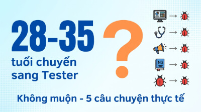
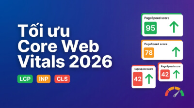

Server vs Client Components: Chọn đúng trong Next.js 15
React 19 và Next.js 15 ra mắt Server Components - nhưng không phải lúc nào cũng dùng được. Bài này giải thích khi nào dùng cái nào, kèm code thực tế.
Tổng hợp các bài viết chia sẻ về kinh nghiệm tự học lập trình online và các kỹ thuật lập trình web.
React 19 và Next.js 15 ra mắt Server Components - nhưng không phải lúc nào cũng dùng được. Bài này giải thích khi nào dùng cái nào, kèm code thực tế.
Giao tiếp khi báo bug, hỏi requirement mơ hồ, daily standup - tester mới cần kỹ năng mềm gì? Ví dụ thực tế và checklist tự đánh giá trước phỏng vấn.
Từ breakpoint strategy, touch-friendly UI đến Tailwind CSS - hướng dẫn mobile-first design giúp website chuẩn SEO và tăng conversion rate thực tế.
28, 30, 35 tuổi chuyển nghề sang tester có muộn không? Phân tích thực tế thị trường VN và 5 câu chuyện thành công từ kế toán, điều dưỡng, marketing.

Cách đo và cải thiện LCP, INP, CLS với impact lớn nhất - tối ưu ảnh WebP/AVIF, giảm JS nặng, SSR, kèm case study website Việt thực tế.

Fresher tester thường bị bất ngờ với bài in-test. Mình giải thích cấu trúc đề, cách viết test case không bỏ sót và câu SQL cần nhớ trước khi phỏng vấn.